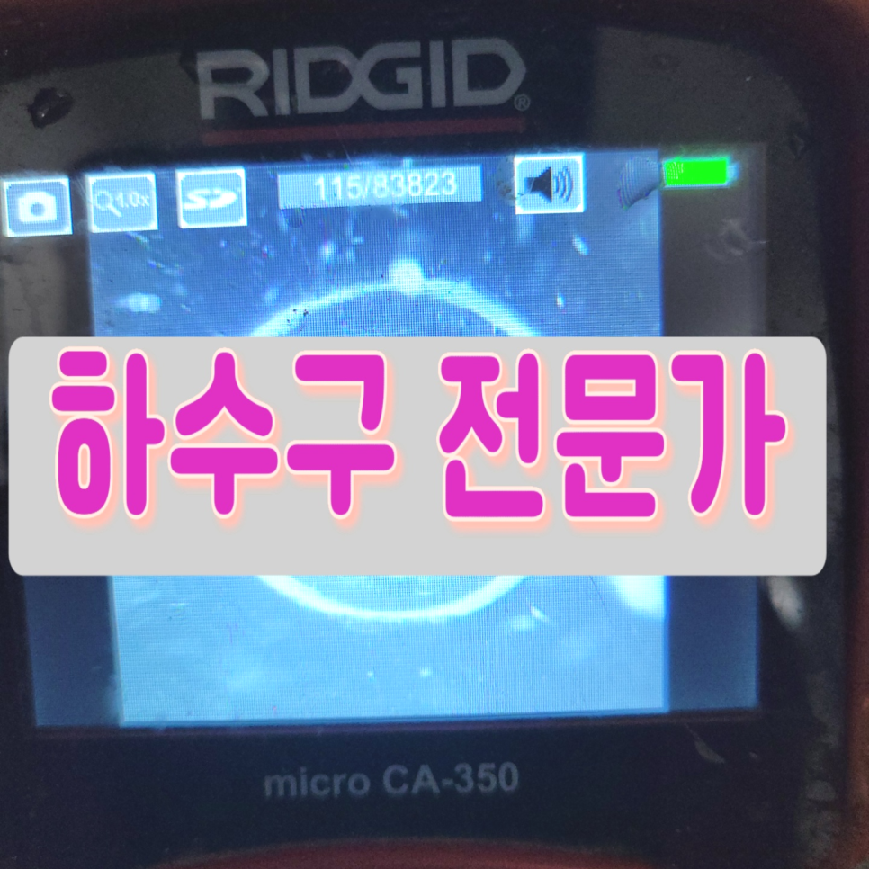
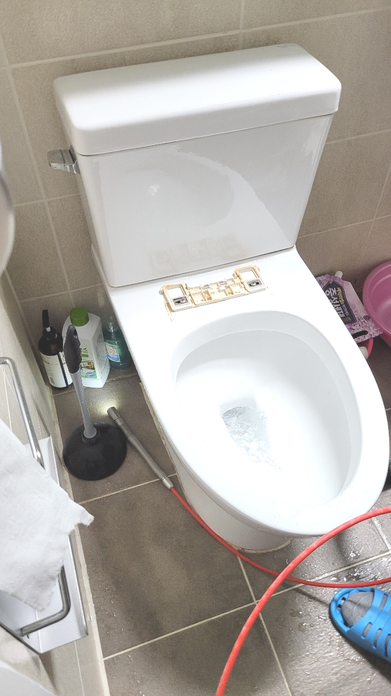
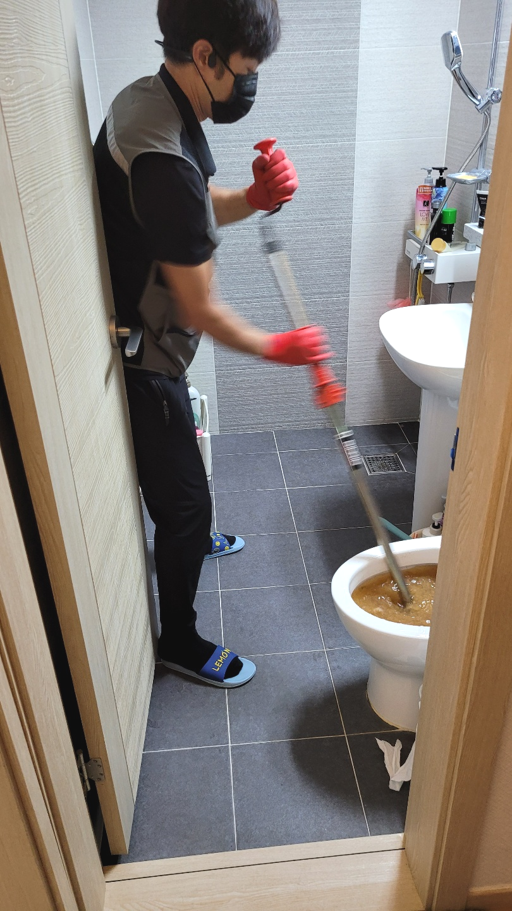
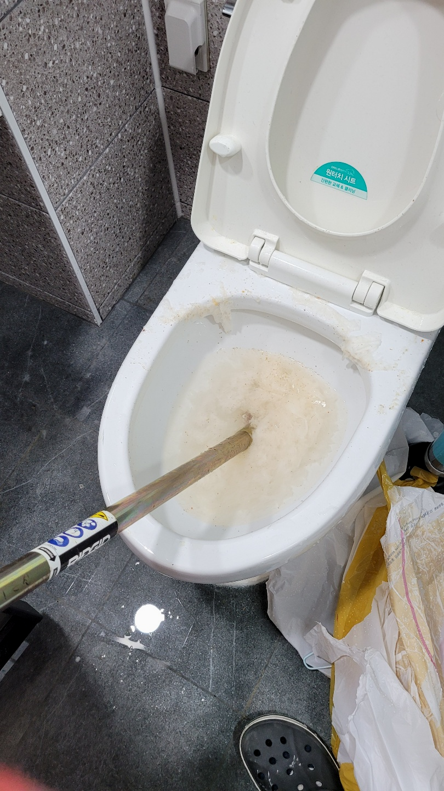
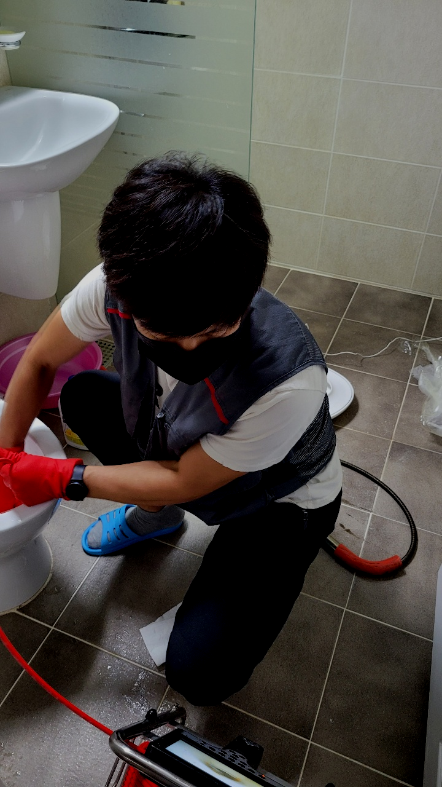
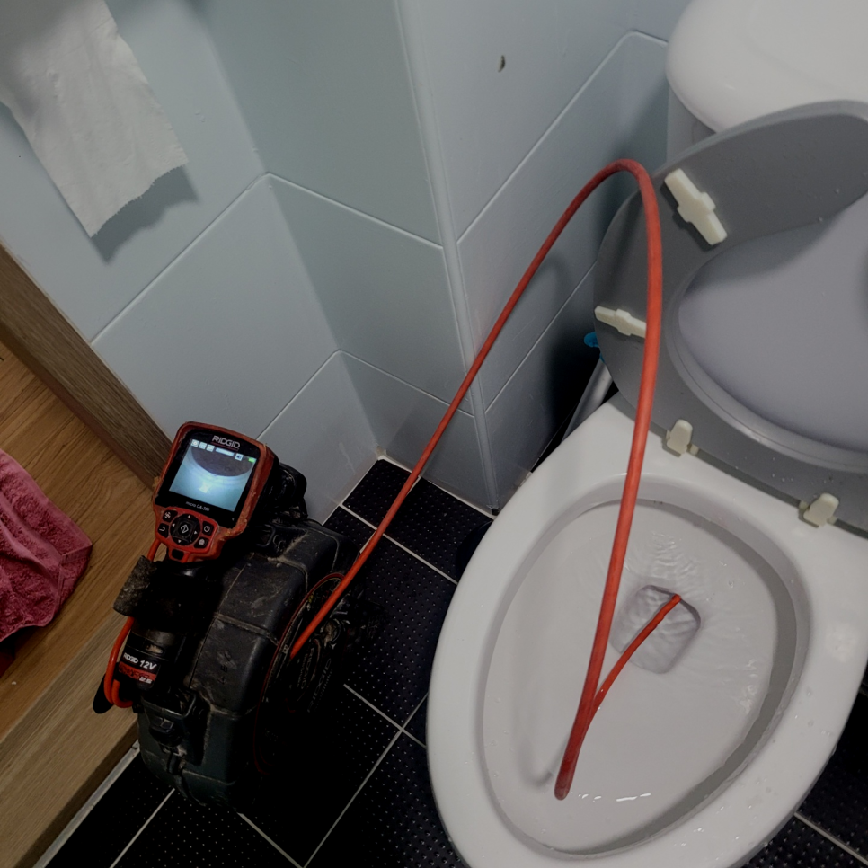
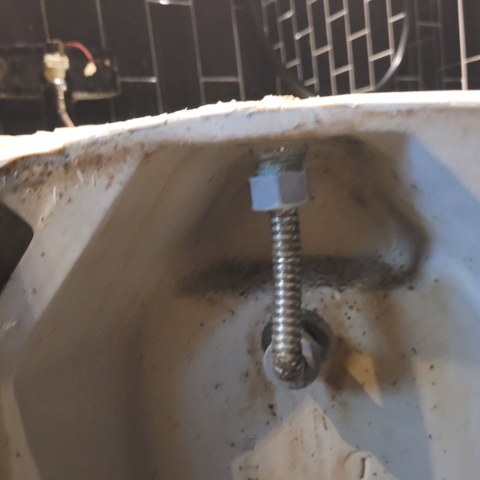

🏠 광교동 변기막힘 역류 이의동 광교 오수역류 변기수리 설비업체
용인 이의동 싱크대막힘 전문 시공 후기

📋 작업 개요
- 위치: 용인 이의동, 이의동, 용인
- 서비스 유형: 싱크대막힘, 변기막힘, 하수구막힘, 배관막힘, 누수수리, 역류해결, 뚫는업체, 배관청소, 고압세척, 설비공사
- 작업 일시: 2023. 11. 9. 14:28
- 업체명: 하수구수사대 (010-5615-2118)
🔍 문제 상황
어서오세요
설비전문업체 "하수구수사대"를 찾아주셔서 고맙습니다.
어서오세요 배출구막히셨나요? 만약 하수구가 막힐 경우 필요할 때 물을 사용할수가 없고 사용을 해도 물이 고여서 배수가 되지 않는다면 굉장히 불편하고 위생적으로 불쾌하실거에요.
저희는 배관막힌 곳이 있으면 어디든지 빠르고 신속하게 방문하여 확실하게 뚫어드리는 하수구 업체로 많은 문의를 받고 해결해 드리고 있습니다. 흔히 하수구가 막히게 되는 것은 일상에서 흔하게 일어나지 않기에 갑작스럽게 배수관막히게 되면 많이 당황스러울실 수밖에 없을것입니다.
광교동 변기막힘 역류 이의동 광교 오수역류 변기수리 설비업체

🔎 원인 분석
💡 전문가 진단: 광교동 변기막힘 역류 이의동 광교 오수역류 변기수리 설비업체
강조하고 싶은 게 또 있다면 수많은 기계들을 적절하게 준비해 놓았는가 입니다. 배수실내든 실외든 구조도 그렇고 이물질 형태는 현장들마다 다릅니다. 그럼에도 장비를 부족하게 준비되어 있는 곳이라면 변수가 된느 상황에는 해결이 불가능해질 확률이 높아집니다.
여기에도 확실한 하수청소 작업이 필요해 보였습니다. 이에 추가적으로 저희는 잔여 물질들을 제거를 하기 위해서 플렉스 샤프트 작업을 진행하기로 결정을 하였습니다. 플렉스 샤프트 장비는 회전력을 발생시키는 갈퀴 노즐이 있어서 석회처럼 단단한 이물질들을 갈아내는 역할을 하는 장비입니다.
만약 퇴수구배관이 파손이 된다면 공사로 이어진다 보니 많은 지출을 하게 된다는 점을 알고 계셨으면 해요. 예약하신 고객분께서도 직접 해보시려고 한 흔적은 있었지만 다행히도 심한 압박을 주지 않았는지 괜찮았어요.
공간이 협소하다면 오랜 기간의 실력을 겸비한 전문가가 반드시 있어야 해요. 그렇게 해야지만 더 이상의 하수막힘이 없어요. 물길만 내어주면 것에 필요 없는 지출은 이제 그만하시고 꼼꼼하게 깨끗하게 근본적인 원인을 해결해 보세요.
한 번만의 작업으로 인해서 몇 개월혹은 몇 년 이상 하수구가 막히는 일이 없도록 관리할 수 있기 때문에 많은 분들이 퇴수에 정기적인 작업으로 쾌적한 유지를 하고있습니다.

🔧 작업 과정
불가피하게 공사가 커지지 않을 수 있도록 미연에 방지할 수 있기 때문입니다. 카메라를 조금씩 넣어 앞으로 전진하다 보니 무언가 꽉 막혀있는 물체가 있음을 직감하였습니다. 오래된 퇴수 배관 같은 경우 거의 머리카락이 주된 원인이 되는 경우가 많습니다.
방문하는 전문배관공들도 좋은실력을가지고있는 실력자들로만 이루어져있어요.처음하시는분이 서투르게 하수관를 만지게된다면 경험이없기때문에 배수관이손상되고 이게끝이아닌 다른상황들도 발생시킬수있기에 실력도 한몫하는데요
배수관들은 시간상관없이항상 물샘증상이나타나기에 쉬는날에도 방문하고있답니다.예기치못하게 퇴수구막혀버려서 만지시다가 더나쁜상황으로 만드시지마시고 베테랑인 저희팀원을통해 답답하신마음을 해결하길바랍니다.
서둘러서 아무거나부으시거나 장비를무작정넣는다면 배수구모양에따라서 크랙이생겨날수있어서 손쓸방법이 없을수도있습니다.
도움을필요로 하신다면 항상 일하고있기때문에 평일주말상관없이 시간상관없이 전화주시면된답니다!하단쪽에 첨부한사진을 확인한다음 문의를주시면 궁금하신것에대해 알려드리고 배관막혔다면 대한민국어디든 곧장출장가드리겠습니다.
이번 현장은배관 통수가 잘 이뤄지지 않다 보니 오물이 위로 올라와 물이 차있는 형태여서 일단 위쪽에 올라온 오물과 함께 이물질들을 석션 장비로 흡입했습니다.
고압세척기가 열심히 파쇄한 찌꺼기들부터 빠르게 밖으로 걷어내고 내시경 카메라로 하수내부를 다시 한번 살펴봅니다. 참고로 이물질 제거에는 펌프와 석션기가 동원되었는데 덕분에 내시경 시야도 충분히 확보되었습니다.
하루를 거르지 않고 실패한 배수현장들에 방문을 드리고 있는데 이런 부분이 미흡했던 다른 업체가 어려운 배수현장에서 성공하지 못하고 도망가 버려서 처음 상황보다 걷잡을 수 없게 된 곳을 매우 자주 보고 있답니다.


✅ 작업 완료
상담을 어려운 일로 여기지 마시고 언제든지 연락주시면 성심성의껏 상담을 해드리고 있으니 맘편히 연락주세요^^
#하수구막힘 #하수구뚫음 #하수구역류 #씽크대막힘 #싱크대역류 #오수관막힘 #하수구청소 #욕실하수구막힘 #변기막힘 #하수구뚫는비용 #싱크대수리 #화장실막힘




⚠️ 베란다 누수 및 방수 관리 방법
- ✅ 비가 많이 올 때 창틀 주변이나 아래층 천장에 얼룩이 생기는지 정기적으로 확인해 보세요.
- ✅ 우수관 주변 실리콘 마감이 들뜨거나 깨진 틈새가 있는지 손상 여부를 수시로 체크하세요.
- ✅ 베란다 바닥 타일의 줄눈(메지)이 소실되면 그 틈으로 물이 침투하여 누수가 유발됩니다.
- ✅ 누수 의심 증상 발견 시 방치하면 아래층 손실이 커지므로 즉시 전문가의 진단을 받으십시오.
💡 핵심 정리
- 확실한 장비 작업(내시경 점검 및 샤프트 스케일링)으로 원인을 뿌리 뽑습니다.
- 작업 후 1년 이내에 동일한 부위 재발 시 100% 무상 A/S 서비스를 보장합니다.
- 서울 · 경기 · 인천 전 지역에 24시간 언제든 긴급 출동할 수 있도록 항시 대기 중입니다.
❓ 자주 묻는 질문 (FAQ)
🚨 용인 이의동 싱크대막힘 문제로 고민이신가요?
정확한 원인 진단과 확실한 시공으로 재발 없는 해결을 약속드립니다.
24시간 긴급 출동 | 서울 · 경기 · 인천 전지역 | 1년 내 재발 시 무상 A/S